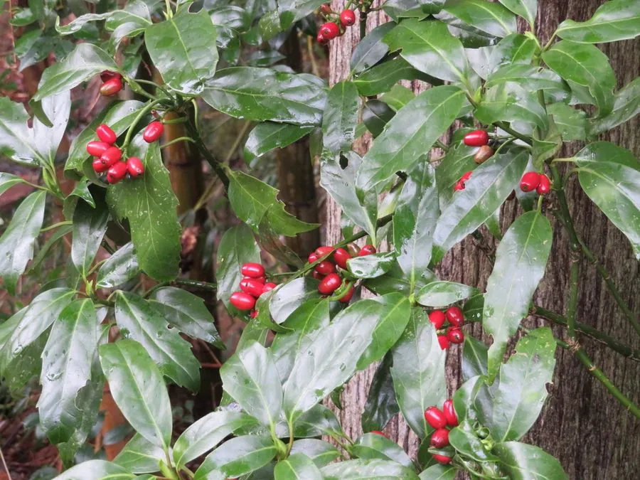

灌木与花木 · 植物界
洒金桃叶珊瑚 Aucuba japonica

山茱萸科常绿灌木，叶面洒有金黄斑点，耐阴性极强，冬季结出鲜红果实，是林下与阴面绿化的常见观叶植物。
- 分类
- 门被子植物门纲木兰纲目山茱萸目科山茱萸科属桃叶珊瑚属
- 栖息环境
- 海拔 1000 米以下的林下、溪边与建筑物阴面，极耐阴、喜温暖湿润
- 地理分布
- 原种产日本；中国长江流域以南各地栽培
- 保护级别
- 暂无评估；中国未列入国家重点保护野生植物名录
物种志
洒金桃叶珊瑚为山茱萸科桃叶珊瑚属常绿灌木，高 1–3 米，枝粗壮，绿色。叶片对生，革质，椭圆状卵形，叶面深绿并散布大小不等的金黄色斑点，边缘具粗齿。花小，紫褐色，组成顶生的圆锥花序，花期 3–4 月；核果椭圆形，成熟时鲜红，果期 10–11 月。
洒金桃叶珊瑚是桃叶珊瑚的斑叶品种，原种产日本，中国长江流域以南各地栽培。它极耐阴，喜温暖湿润，适宜疏松肥沃、排水良好的土壤，忌强光直射。叶色终年明亮，冬季红果鲜艳，是林下、建筑物阴面与室内绿化的优良材料。雌雄异株，需同时栽植雄株才能结果；叶片含桃叶珊瑚苷，可入药，但果实不宜食用。
形态与习性
- 株高1–3 m，枝粗壮、绿色
- 花期3–4 月，花小、紫褐色
- 果期10–11 月，核果鲜红
- 光照极耐阴，忌强光直射
- 水分喜湿润，忌积水
- 土壤疏松肥沃、排水良好的壤土
- 主要用途林下与阴面绿化、室内盆栽
趣味知识
- “洒金”指叶片上散布的金黄色斑点，是桃叶珊瑚的斑叶品种。
- 桃叶珊瑚雌雄异株，只有雌株在授粉后才会结出红果。
- 它极耐阴，常被种在建筑物北侧或大树下。
- 叶片含桃叶珊瑚苷，可入药，但果实不宜食用。